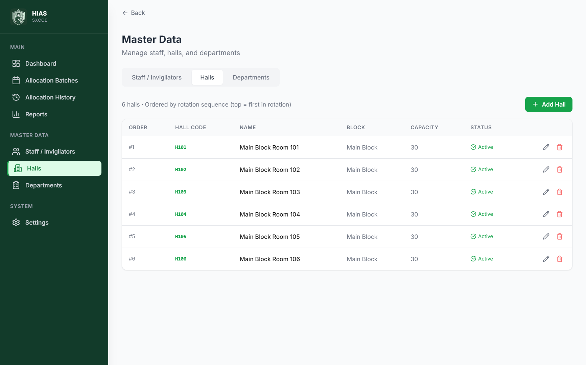
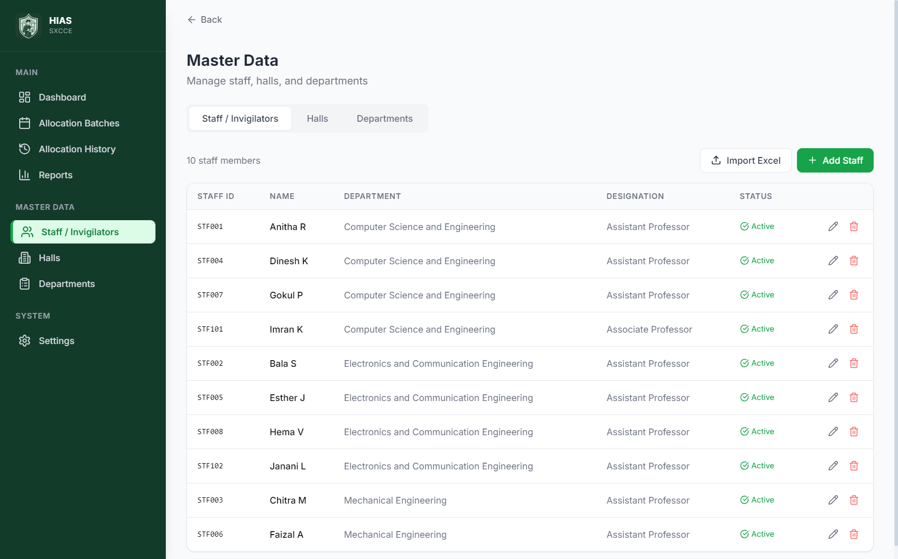
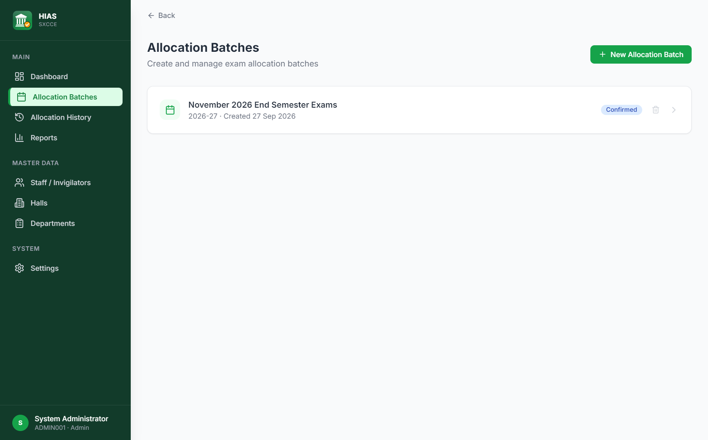
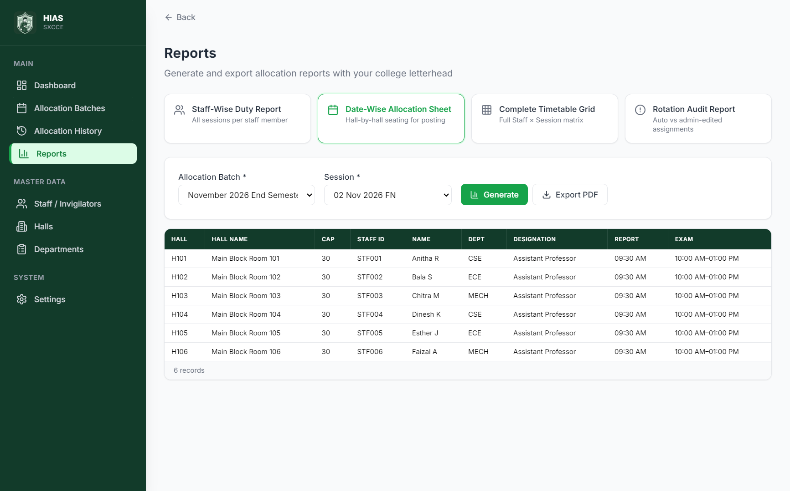

User Guide
HIAS
Hall Invigilator Allocation System
St. Xavier's Catholic College of Engineering (Autonomous), Nagercoil
HIAS assigns invigilators (staff) to examination halls for every exam session, and rotates those assignments fairly. It remembers who has already been in which hall, so nobody is sent to the same hall again until they have had a turn in every other hall of the rotation.
HIAS-Setup-1.1.0.exe (about 76 MB) to the computer and double-click it.Installing a newer version over an older one upgrades it and keeps all data. To remove HIAS, use Windows Settings → Apps → Installed apps → HIAS - Hall Invigilator Allocation System → Uninstall.
%APPDATA%\eias\eias.db. Updating or reinstalling HIAS keeps this file. Uninstalling the app does not delete it either. See section 9 for backups.
| Sidebar item | What it is for |
|---|---|
| Dashboard | Totals at a glance: invigilators, halls, batches, upcoming and confirmed sessions, and sessions still pending allocation. Click a card to jump to it. |
| Allocation Batches | Create an exam batch (for example "November 2026 End Semester Exams") and open it to allocate each session. |
| Allocation History | Search every confirmed allocation by batch, session, staff member or hall. |
| Reports | Staff-wise, date-wise, timetable and audit reports, each exportable as PDF. |
| Staff / Halls / Departments | The master data HIAS allocates from. |
| Settings | College name, default session timings, backup and restore, and rotation restart. |
A Back link at the top of each page returns to the previous screen. The button at the top of the sidebar shrinks it to icons (hover over an icon to see its name); HIAS remembers your choice. In a narrow window, for example when HIAS fills half the screen, the sidebar shows icons automatically. The bottom of the sidebar reads Offline · Local database: everything you see is stored on this computer.
Do these steps once, in this order. You can come back and change anything later.
Open Settings → College Profile. The College Full Name is printed at the top of every PDF; the Short Name appears under the HIAS logo in the sidebar. Click Save.
Under Settings → Session Timings, set the usual reporting, start and end times for the Forenoon (FN) and Afternoon (AN) sessions. New batches start with these times; you can still change them per session.
Open Departments and add each department with a short Code (for example CSE) and a full Name. Reports use the short code. The code is saved exactly as you type it, but capital and small letters count as the same code: once CSE exists, cse or Cse is refused as a duplicate. The bin icon removes a department that no staff member belongs to, after asking you to confirm.
Open Halls → Add Hall. Only the Hall Code (for example H101) is required. Block and Floor (Ground, 1st, 2nd…) say where the hall is; they are printed next to the hall code on the allocation sheet so invigilators know where to go. Capacity is optional. Untick Active for a hall that is temporarily unavailable; inactive halls are never allocated.

Add staff one at a time with Add Staff, or many at once with Import Excel. The file HIAS-Staff-Import-Template.xlsx, supplied with HIAS, has the right headings ready. For an import, the first row of the sheet must contain these column headings:
| Column | Required? | Notes |
|---|---|---|
| Staff ID | Yes | Must be unique. Rows whose Staff ID already exists are skipped. |
| Name | Yes | Full name of the staff member. |
| Department | Yes | The department's code or full name; it must already exist in Departments. |
| Designation, Email | No | Optional details. |
After the import, HIAS shows how many staff were added and lists each skipped row with the reason (for example "Row 5: Department CIVIL does not match any existing department"), so you can correct the sheet and import it again.

DELETE to confirm.A batch is one examination series, such as an end-semester or internal assessment exam. Open Allocation Batches → New Allocation Batch. The wizard has three steps:
2026-27) and the number of exam days.
To delete a whole batch, click its bin icon and type DELETE. This removes all its sessions, allocations and rotation records and cannot be undone.
Open a batch to reach its Allocation Workspace. Each session appears as a tab (for example 02 Nov 2026 FN).

Instead of ticking people one by one, upload an Excel (.xlsx, .xls) or .csv file listing the invigilators on duty:
H101) in the Hall column to choose which halls are open. Save the file.Your own duty list works too, as long as its first row has a Staff ID column (or a Name column). A sheet with no headings is read as a list of Staff IDs in the first column. The Hall column only decides which halls are used; HIAS still decides who goes to which hall, so the rotation stays fair.
When the people on duty barely change from one session to the next, start from an earlier session's ticks instead of ticking everyone again:
The copy replaces what is ticked; then add or remove people as usual. Staff and halls that are no longer active are left out, and the summary says how many. Only the selection is copied, never who had which hall: Generate Allocation draws everyone's hall afresh, exactly as if you had ticked them by hand.
| Rule | Meaning |
|---|---|
| R1 | A staff member does not return to a hall until they have been through the other halls in the rotation. When the people on duty change a lot, this is occasionally impossible for everyone; HIAS then keeps repeats to the minimum and shows them as yellow "Unavoidable repeat" warnings, which do not block confirmation. |
| R2 | A hall gets only one invigilator per session. |
| R3 | A staff member is in only one hall per session. |
| R4 | Every earlier session of the batch must be confirmed first. |
| R5 / R6 | Inactive staff and inactive halls are never used. |
| R7 | The number of staff equals the number of halls. |
Open Reports, choose a report type, choose the filters, click Generate to preview it, then Export PDF. Each PDF carries the college name and the time it was generated. When you export, Windows asks where to save the file (the Downloads folder is suggested).
| Report | Use it for | Filters |
|---|---|---|
| Staff-Wise Duty Report | Every duty of each staff member: date, session, hall and timings. | Optional: one staff member |
| Date-Wise Allocation Sheet | The hall-by-hall list for one session, for the notice board. The title names the date and session. | Batch and session |
| Complete Timetable Grid | One page showing every staff member against every session of a batch. | Batch |
| Rotation Audit Report | Which assignments were generated automatically and which were changed by an admin (swaps). | Batch |

Allocation History lets you look up any past confirmed allocation. Filter by batch, session, staff member or hall and click Search Records. This is the quickest way to answer "Where was this person on that day?".
hias-backup.db by default; adding the date to the name helps.eias.db.before-restore-20261101-093000.bak, with the date and time), and then replaces it.The same steps move HIAS to a new computer: back up on the old computer, install HIAS on the new one, and restore. Everything (staff, halls, batches, allocations and the rotation) travels in that one file. To go back to the data from before a restore, restore the safety copy the same way.
Settings → Restart Rotation clears the whole rotation history, so every staff member starts a fresh round with every hall open to them again. Use it only at a genuine new start, such as the beginning of an academic year. You must type RESTART to confirm. Past allocations and reports are not deleted; only the rotation memory is cleared.
| Problem | What to do |
|---|---|
| "Staff count must equal hall count" | Select the same number of staff and halls for the session. |
| A staff member or hall is missing from the selection list | Check it is marked Active in Staff or Halls. |
| Confirm is refused with a rule message (R1–R7) | Read the message; it names the person or hall. Edit that row, or regenerate, then confirm again. |
| Windows says "Windows protected your PC" when installing | Click More info → Run anyway. The installer is not code-signed. |
| The app shows an error box at start-up | Note the message, then restore the latest backup (section 9). The message is shown because a silent failure would give no clue. |
| Can two computers share the same data? | No. Each installation has its own data. Use one computer for allocation, and move data with backup and restore if needed. |
| Does HIAS need the internet? | No. It works completely offline: Wi-Fi and network cables can be disconnected. Reports and PDFs are made on this computer. |
| Is there a login or password? | No. HIAS is meant for one trusted computer; whoever can use its Windows account can use HIAS. Lock the computer (Windows key + L) when you leave it. |
| The data file was deleted or the computer was replaced | HIAS starts with a new, empty database. Restore your latest backup (section 9) to get everything back. Without a backup the data cannot be recovered, which is why regular backups matter. |